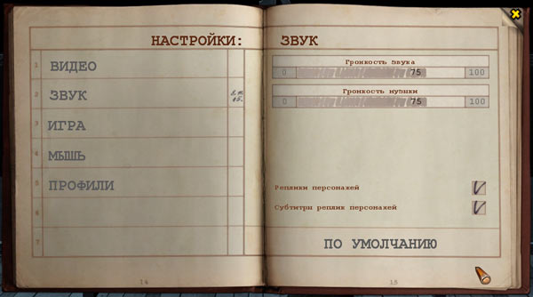
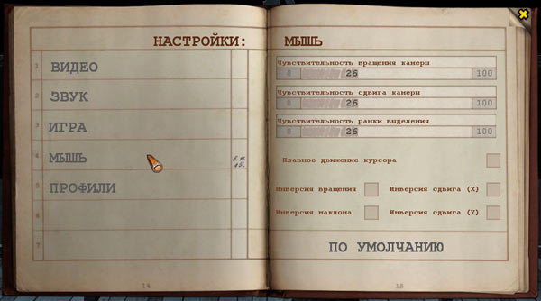
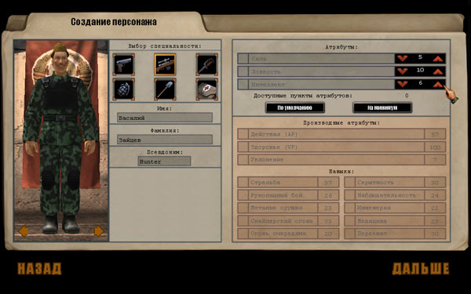
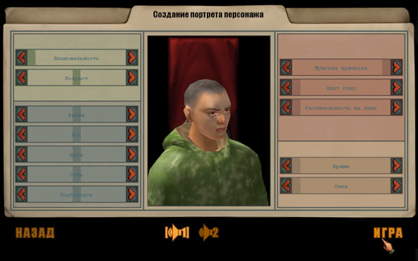

Игровое меню

В любой момент игры, нажав клавишу
Оно позволяет:
Переиграть миссию — восстановить момент входа в текущую игровую зону.
Сохранить игру — сохранить текущую игру. Для каждой записи необходимо выбрать своё название. Кроме того, не вызывая меню, можно воспользоваться клавишей [ F5 ] для «быстрой записи».
Загрузить игру — загрузить игру, выбрав её из списка ранее сохранённых игр. Кроме того, не вызывая меню, можно воспользоваться клавишей [ F8 ] для загрузки последней «быстрой записи».
Настройки — изменить игровые настройки (дублирует аналогичный пункт главного меню, см. «Экраны настроек»).
Выйти в главное меню — прервать игру и выйти в главное меню.
Выйти в Windows — прервать игру и выйти в Windows.
Вернуться в игру — вернуться в текущий момент игры.
Перед выходом в главное меню или в Windows вам будет выведен запрос, следует ли сохранить текущий момент игры.
Экран сохранения и загрузки игры
Этот экран используется для записи на диск текущего момента игры либо для загрузки сделанной ранее записи. В левой части экрана выводится список игр на одной из двух закладок. Для переключения между записью и чтением щёлкните курсором по надписи на закладке сохранения или загрузки. Списки на обеих закладках выглядят одинаково, за исключением поля для ввода названия записи, которое есть только на закладке сохранения (см. снимок). В левой колонке списка выводятся названия игр, в правой — дата записи; выбранная строка отмечается маркером. Для просмотра длинного списка можно использовать линейку прокрутки справа от списка или колесо мыши. В правой части экрана выводится уменьшенное изображение экрана текущей игры (при сохранении) или игры, на которую указывает маркер (при загрузке).

Экран сохранения вызывается клавишей [ F6 ] , экран загрузки — [ F7 ] .
Вызов экрана сохранения и «быстрая запись» в некоторые моменты игры могут быть недоступны из-за ограничений, связанных с выбранной вами сложностью игры.
Для загрузки игры выберите требуемую строку и щёлкните по пункту «Загрузить» в нижней части экрана. Для сохранения введите в поле ввода название записи, затем выберите пункт «Сохранить». Название может включать буквы, цифры, дефис и символ подчёркивания. При сохранении игры вы можете выбрать название существующей записи, тогда новая запись заменит старую. Названия игр, присвоенные при «быстрой записи» или «автозаписи» (см. ниже), предопределены, их нельзя использовать при записи вручную.
Пункт «Удалить» в экране загрузки позволяет стереть запись, на которую указывает маркер. При выборе этого пункта выводится запрос, вы должны подтвердить удаление записи.
Кнопка закрытия экрана
Обратите внимание на жёлтый крест в правом верхнем углу экрана сохранения/загрузки. Щелчок по ней закрывает текущий экран и возвращает к предыдущему экрану. Аналогичная кнопка есть в большинстве экранов, стилизованных под журналы и документы.
Быстрая запись и автозапись
Быстрая запись даёт возможность сохранить текущий момент игры, не выходя в экран сохранения и без вывода диалоговых окон. Она выполняется клавишей [ F5 ] , во время записи в центре экрана выводится табличка «Запись...». Для загрузки быстрой записи используется клавиша [ F8 ] , при этом появляется табличка «Загрузка...». Игра, сохранённая таким образом, имеет имя «Быстрая запись». В игре предусмотрены две «быстрые записи», которые содержат в имени цифры (1) и (2), соответственно. Эти имена чередуются. При загрузке быстрой записи вызывается та запись, которая была сделана последней; для загрузки предпоследней быстрой записи нужно войти в экран загрузки игры и выбрать соответствующую строку.
Автозапись выполняется автоматически каждый раз при входе в игровую зону или при выходе из неё. Записанная игра имеет имя «Автозапись (начало миссии)» или «Автозапись (конец миссии)». При каждой следующей автозаписи эти имена не меняются, старая автозапись всегда перезаписывается новой.
Экраны настроек
Группа экранов, стилизованных под журнал, предоставляет доступ к различным настройкам игры. Левая часть экранов представляет собой меню с перечнем всех групп — Видео, Звук, Игра, Мышь, Профили. Вид правой части зависит от конкретной группы. Для закрытия экрана и возврата в главное меню или в игровое меню служит жёлтый крест в правом верхнем углу. В правой нижней части всех экранов есть пункт «По умолчанию» — он сбрасывает внесённые изменения (как последние, так и сделанные ранее) и восстанавливает настройки, рекомендуемые по умолчанию для вашей конфигурации компьютера.
Настройки выполняются с помощью переключателей, регуляторов и списков:
Переключатели имеют два состояния: «включено» и «выключено» и представляют собой квадраты, в которых можно поставить галочку. Чтобы изменить текущее значение, щёлкните по полю переключателя курсором мыши.
Движковые регуляторы применяются для точной настройки какого-либо параметра: левое положение соответствует минимуму параметра, правое — максимуму. Ими можно управлять с помощью кнопок по краям линейки регулятора или «перетаскивая» курсором границу закрашенной части на нужное место.
Раскрывающиеся списки используются для выбора одного из нескольких вариантов настроек, их легко отличить по тексту, оканчивающемуся звёздочкой. Список раскрывается, если щёлкнуть курсором мыши по текстовой строке. После этого нужно выбрать курсором один из пунктов списка и щёлкнуть по нему.
Настройки видеосистемы
Этот экран содержит настройки, которые могут существенно сказаться на качестве изображения и скорости обновления экрана. Основная часть настроек определяется автоматически при первом запуске игры. Существенно менять настройки по сравнению с теми, что предложены по умолчанию, не рекомендуется.

Гамма-коррекция управляет гамма-коррекцией в игре, т.е. яркостью изображения на промежуточных участках между наиболее тёмными и наиболее светлыми. Позволяет скорректировать изображение в зависимости от параметров вашего монитора. Нормальное значение: 50.
Разрешение задаёт видеорежим, в котором работает игра (число точек по горизонтали и по вертикали, число бит цвета на точку). Список возможных режимов соответствует параметрам вашего видеоконтроллера и монитора. Если компьютер отвечает рекомендуемым системным требованиям, желательно установить разрешение 1024x768x32 (или не менять разрешение, установленное по умолчанию). При низком быстродействии видеосистемы разрешение можно снизить, но это ухудшит качество изображения.
Качество управляет общим качеством изображения. Очень высокое — даёт наилучшее качество изображения. Высокое — хорошее качество. Среднее — компромисс между скоростью и качеством. Низкое — максимальную скорость видеовывода.
Качество текстур изменяет качество текстур, которые определяют внешний вид поверхностей. Очень высокое — даёт наилучшее качество текстур. Высокое — хорошее качество. Среднее — компромисс между скоростью и качеством. Низкое — максимальную скорость видеовывода.
Качество освещения влияет на скорость вывода изображения после сдвига камеры, когда требуется перерисовка всех предметов. Очень высокое — сразу даёт изображение наилучшего качества при существенном снижении скорости видеовывода на время отрисовки. Высокое — хорошее качество, возрастает снижение скорости видеовывода на время отрисовки. Среднее — компромисс между скоростью и качеством при снижении скорости видеовывода на время отрисовки финального изображения. Низкое — максимальная скорость видеовывода, окончательная отрисовка изображения занимает мало дополнительного времени.
Анизотропная фильтрация влияет на вид текстуры на поверхностях, которые находятся под острым углом к камере. Значение x8 — даёт наилучшее качество изображения при значительном снижении быстродействия, x4 — очень хорошее качество, x2 — хорошее качество. Нет — дает максимальную скорость видеовывода.
Сглаживание (anti-aliasing) влияет на сглаживание изображения. Очень высокое — даёт наивысшее качество сглаживания. Высокое — хорошее качество. Среднее — компромисс между скоростью и качеством. Низкое — изображение размазывается, скорость видеовывода максимальная.
Показывать листву выводит изображение листвы у деревьев (при отключении выводятся только ветви). Нормальное значение: включено. Отключение листвы приводит к заметному увеличению скорости видеовывода на маломощных компьютерах, но снижает реалистичность изображения. Примечание: на область зрения и внутриигровую видимость персонажей этот параметр не влияет, но отключение листвы облегчает игроку поиск персонажей и предметов, лежащих на местности.
Аппаратный курсор позволяет заменить цветные художественные курсоры в игре на простые курсоры-пиктограммы. Его включение приводит к снижению задержек курсора при сдвиге мыши и рекомендуется для маломощных компьютеров, если скорость движения обычного курсора слишком мала или он движется рывками. Нормальное значение: выключено.
Настройки звука
Этот экран управляет настройками, которые влияют на звуковые эффекты в игре.

Громкость звука определяет общую громкость звука. Нормальное значение: 75.
Громкость музыки определяет громкость музыки. Нормальное значение: 75.
Реплики персонажей — определяет, будут ли ваши персонажи подтверждать голосом полученные команды, комментировать свои действия и действия других персонажей или не будут. Нормальное значение: включено.
Субтитры реплик персонажей определяет, будут ли выводиться на экране субтитры с текстом ответов. Субтитры выводятся в левой части боевого экрана над игровой панелью. Нормальное значение: включено. Примечание: в режиме диалога субтитры выводятся всегда, независимо от данной настройки.
Игровые настройки
На этом экране выводятся настройки, которые действуют на игровой процесс.

Задержка контекстной подсказки определяет время, через которое рядом с курсором мыши будет появляться окно с контекстной подсказкой, относящейся к предмету или элементу управления, на который показывает курсор. Нормальное значение: 5.
Скорость анимации определяет скорость, с которой персонажи будут выполнять все действия на экране. Нормальное значение: 130%.
Показывать иконки — определяет, будут ли отображаться специальные пиктограммы над персонажами противника. Нормальное состояние: включено.
Показывать подсказки — определяет, будут ли в игре отображаться подсказки и советы для лучшего освоения игрового процесса. Нормальное состояние: включено.
Автоматическая запись даёт возможность автоматически записывать игру при входе в игровую зону и при выходе из неё. Нормальное состояние: включено.
Только походовый режим препятствует переходу игры из пошагового режима в реальное время, когда ваши персонажи не атакуют и в их поле видимости нет противников. Нормальное состояние: выключено (т.е. режим реального времени разрешён).
Движение всегда по двойному щелчку определяет, будут ли персонажи в режиме реального времени начинать движение только после двойного щелчка мыши по конечной точке пути, как это происходит в пошаговом режиме или нет. Нормальное состояние: выключено (т.е. персонажи начинают движение сразу после указания им конечной точки).
Путь в режиме реального времени определяет, будет ли в режиме реального времени предполагаемая траектория движения персонажа отображаться пунктирной линией, как это происходит в пошаговом режиме. Нормальное состояние: включено.
Настройки управления
Этот экран определяет настройки, связанные с управлением камерой с помощью мыши.

Чувствительность вращения камеры — изменяется скорость перемещения, вращения и наклона камеры при управлении камерой как с помощью клавиатуры, так и с помощью мыши. Нормальное значение: 26.
Чувствительность сдвига камеры — изменяется скорость прокрутки камеры по игровой зоне. Нормальное значение: 26.
Чувствительность рамки выделения — изменяется величина, на которую надо сдвинуть мышь при нажатой левой кнопке, чтобы началось выделение рамкой. Нормальное значение: 26.
Плавное движение курсора — альтернатива аппаратному курсору, позволяет снизить задержки нормального курсора при сдвиге мыши; скорость видеовывода немного снижается. Рекомендуется для маломощных компьютеров.
Инверсия сдвига (X), Инверсия сдвига (Y), Инверсия вращения, Инверсия наклона — для каждой из двух координат изменяется соответствие между направлением сдвига мыши и направлением перемещения камеры; изменяется направление, в котором нужно вращать колесо мыши, чтобы приблизить/удалить камеру; изменяется соответствие между направлением сдвига мыши при нажатой правой кнопке и наклоном камеры.
Настройки профилей
На этом экране можно менять профили одного или нескольких игроков.

Текущий профиль позволяет выбрать один из существующих профилей. Профиль включает все игровые настройки и записи игры, сделанные игроком с данным именем. При первом запуске создаётся профиль по умолчанию (default), затем можно добавить новый профиль или выбрать один из существующих.
Удалить текущий профиль — позволяет удалить один из созданных профилей (профиль по умолчанию удалить нельзя).
Имя профиля — поле ввода для создания нового профиля. После ввода имени нужно щёлкнуть по полю Создать новый профиль. Новый профиль будет помещён в каталог с указанным именем.
Генерация персонажа
В начале кампании вместо выбора героя из 4 готовых персонажей вы можете создать своего героя с заданными вами параметрами. Для этого на экране выбора персонажа (см. главу «Введение в игру», «Выбор персонажа») выберите пункт «Создание персонажа». Перед вами появится экран создания персонажа.

Чтобы создать персонажа, вам нужно последовательно пройти несколько этапов, делая выбор из предлагаемых параметров. Для перемещения по полям можно использовать клавишу [ Tab ] .
Вначале вам необходимо выбрать воинскую специальность персонажа, для этого служат 6 кнопок в левой верхней части экрана. Специальности отображаются кнопками с соответствующими иконками, их названия можно прочитать в подсказке при наведении курсора на кнопку. Затем вы можете выбрать для персонажа одну из нескольких моделей, используйте стрелки, которые находятся под фигурой персонажа. Фигуру можно вращать вокруг оси, если при нажатой левой кнопке мыши двигать мышь влево или вправо.
После этого нужно ввести имя и фамилию персонажа для официальных документов, а также его псевдоним, который будет отображаться в интерфейсе игры.
Последний этап создания персонажа — выбор основных (первичных) атрибутов: силы, ловкости и интеллекта. Изменение каждого из этих параметров влечёт за собой изменение вторичных атрибутов — AP, VP и уклонения, которые вместе с основными атрибутами влияют на навыки, а также изменение навыков. Список атрибутов и навыков и их текущие значения выводятся на правой половине экрана. Вы можете перераспределить величины основных атрибутов, предлагаемые по умолчанию, увеличив одни за счёт уменьшения других. Для этого служит группа из 6 стрелок в верхней части экрана.
Чтобы изменить начальные параметры, вы должны вначале получить некоторое количество свободных пунктов за счёт уменьшения одного или нескольких атрибутов. Это число выводится в строке «Доступные пункты атрибутов» под стрелками. Все полученные пункты вы можете распределить по своему усмотрению, при этом можно видеть, как будут меняться вторичные атрибуты и навыки персонажа. Обратите внимание, что число свободных пунктов снова должно стать равным 0, иначе процесс создания персонажа не будет считаться завершённым и вы не сможете попасть в следующий экран. Кнопка «По умолчанию» позволяет вам восстановить исходные значения параметров персонажа. Кнопка «На минимум» выставляет все параметры в минимальное значение (2), что даёт максимум пунктов, доступных для распределения. Начальное распределение параметров для разных специальностей смотрите в главе «Ролевая и боевая системы», «Параметры персонажа».
В нижней части экрана «Назад» возвращает в экран выбора персонажа, «Дальше» ведёт к экрану настройки внешнего вида лица и голоса.
Настройка облика персонажа
По сравнению с выбором одного из заданных в игре обликов данный экран позволяет вам настроить внешний вид персонажа гораздо более детально. Чтобы попасть сюда, выберите «Создание портрета» в экране настройки внешнего вида и голоса персонажа.

В центре экрана находится портрет персонажа в одежде той воинской специальности, которую вы выбрали. Группы линеек слева и справа дают возможность детально настроить черты лица персонажа, оттенки цвета и другие параметры внешнего вида:
Национальность |
Мужская причёска |
Возраст |
Цвет глаз |
Брови |
Растительность на лице |
Нос |
|
Щёки |
|
Губы |
Шрамы |
Подбородок |
Очки |
Внизу экрана в центре расположен переключатель, он позволяет выбрать голос, которым будет озвучен персонаж. Пункт «Назад» слева возвращает в экран выбора внешнего вида персонажа, пункт «Игра» справа ведёт к началу кампании.
Настройка сложности игры
В начале кампании кроме, выбора одного из 3 заданных уровней сложности, вы можете произвольно настроить ряд параметров, которые влияют на сложность игры. Они определят суммарный коэффициент сложности, который будет учитываться в итоговой таблице с результатами прохождения игры. Для настройки используется пункт «По выбору» в экране выбора сложности кампании, который выводит следующий экран:

Начальные значения параметров, выведенные здесь, зависят от того, какой уровень был выбран на предыдущем экране. Благодаря этому можно выбрать один из уровней сложности как прототип и изменить одну или несколько настроек. Все настраиваемые параметры делятся на 2 группы — параметры противников и параметры игрока.
Параметры противников:
AP противника |
Позволяет изменить значение AP (действия) противников в пределах от 40 до 160% |
VP противника |
Позволяет изменить значение VP (здоровье) противников в пределах от 50 до 200% |
Уровень противника |
Позволяет изменить уровень противников от -5 до +5 |
Урон от противника |
Позволяет изменить урон, наносимый игроку персонажами противника, в пределах 50 до 200% |
Маскировка противника |
Управляет вероятностью маскировки противников |
Параметры игрока:
Урон игрока |
Позволяет изменить урон, наносимый противникам персонажами игрока, в пределах 50 до 200% |
Вероятность поломки |
Позволяет изменить вероятность отказа оружия (заклинивания или поломки), в пределах 50 до 200% |
Возможность сохранения |
Определяет, в каких случаях возможна запись игры на диск (включая быструю запись) |
Лечение |
Определяет степень автоматического лечения членов группы после выхода из зоны |
Эвакуация пострадавших вручную |
Определяет, требуется ли выносить вручную из зоны членов группы, находящихся без сознания |
По итогам настройки параметров вычисляется рейтинг — это множитель, который будет использован после завершения игры для расчёта результата в таблице достижений.